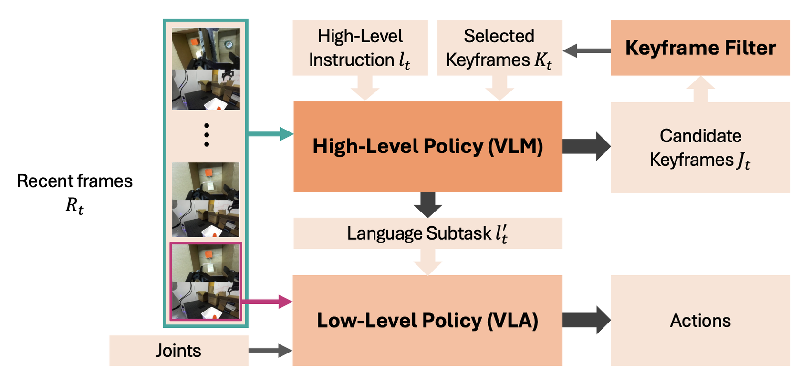
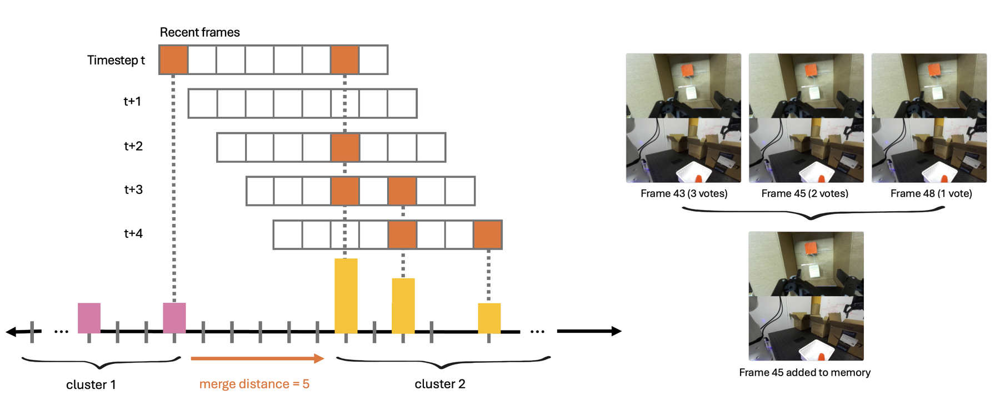
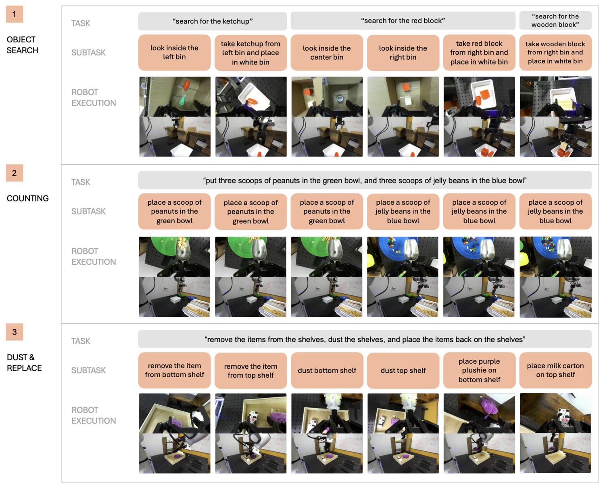
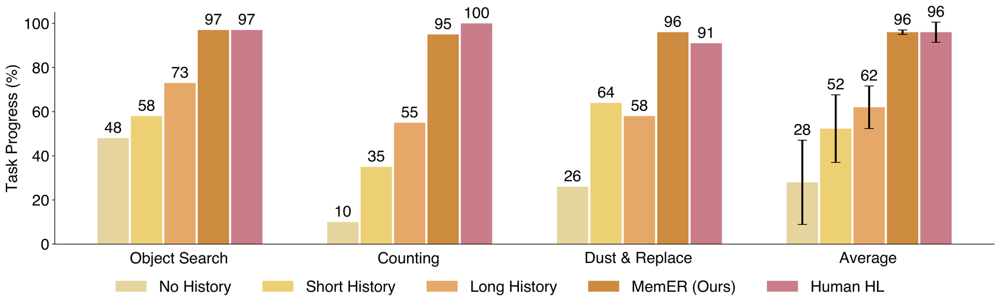

能拿到的是：一个不需要改动作头、不需要重训 VLA 的分钟级记忆方案——7B VLM 每步自选不超过 8 张历史关键帧放回自己的上下文，再把「现在该做哪个子任务」用一句话交给 π0.5。代价是高层必须 1 Hz 在线跑一个 7B VLM，而且关键帧一旦进库永不删除、错误关键帧没有任何回收路径。
- 最小可复用件
- 关键帧提名 + 一维单链接聚类 + 簇内中位数代表帧（Algorithm 1，约 20 行），与具体 VLA 解耦，可挂到任意「高层出语言、低层出动作」的分层系统上。
- 主要风险
- 检索是「全量注入」而非相似度 top-k，库内没有淘汰和降权机制；关键帧与当前视角不对齐时无法自检；πh 1 Hz 的节拍决定了它只能处理子任务级的状态变化，接不了高频反应式控制。
- 复现门槛
- 每任务 50 条长时程遥操示范 + 10–15 条干预数据 + 子任务与关键帧的半自动标注；高层 Qwen2.5-VL-7B 微调 4500 步（论文报 96 H200 GPU 小时），低层 π0.5 从 DROID 权重微调 18000 步（48 H200 GPU 小时），π0.5 权重需向 Physical Intelligence 申请。
1 核心摘要
问题出在「历史怎么进上下文」这一步。直接在策略里条件化几百帧原始观测，显存与训练成本按帧数线性上涨，而且长历史会诱发对示范者动作序列的伪相关依赖——真机部署时策略自己走出的状态分布与示范不同，历史越长，协变量偏移被放得越大；反过来，对历史做无差别降采样，又会把「刚才往左边箱子里看过一眼，里面没有番茄酱」这类一次性证据整段丢掉。作者把这两条都点名为失败路径，并明确提出：策略必须学会过滤并只保留任务相关信息。
MemER 的做法是把记忆从动作策略里搬到一个 7B 的视觉语言模型上，做成两级。高层 πh（微调后的 Qwen2.5-VL-7B-Instruct）每次看到三样东西：两路相机最近 N=8 帧、当前高层指令 lt、以及此前已选出的关键帧集合 Kt（实际规模 |Kt| ≤ 8）。它一次输出两件事：当前要执行的子任务 l′t，以及从最近 8 帧里挑出的「候选关键帧」Jt。低层 πl（微调后的 π0.5）只吃 l′t、当前帧和关节状态，输出 15 步动作块，执行其中 8 步后重规划。关键帧本身从不进入低层——它只改变高层说的话。
候选帧不会直接进库。系统把所有时间步提名过的帧索引汇总成一个保留重复项的有序列表，用合并距离 d=5 的一维单链接聚类切段，每簇取索引中位数作为代表帧写入 Kt。重复提名被保留，正是为了让中位数起到「多次投票选代表」的作用。整条链路是纯在线的：库在同一段轨迹内逐帧生长，不看未来帧，不用 oracle 状态，也不跨 trial 持久化。
在三个需要分钟级记忆的真机任务上（20 次试验/任务/方法），平均任务进度 96%，对比无历史 28%、8 帧短历史 52%、32 帧长历史 62%、人类给子任务的 Human HL 96%。判定：这是当前「检索式记忆」里工程代价最低的一条基线——不动动作头、不加检索索引、只加一层会挑帧的 VLM；它的天花板也很清楚，记忆容量无上限也无淘汰，一旦挑错帧，错误会通过语言子任务直接控制住整段行为。
2 记忆环节定位
主命中「记忆表征」与「索引与检索」：表征单元是未经压缩的原始关键帧图像，检索单元是「指令 + 近期帧」条件下的自选帧集合。部分命中「写入触发」，因为写入时机由高层策略在闭环中自行判断，但它判断的是「最近 8 帧里哪帧值得记」，而不是子任务边界检测器。部分命中「动作接口」，因为记忆确实影响动作，但只经由一句自然语言子任务间接传导，没有任何记忆向量进入动作头。
| 维度 | MemER 的具体设定 |
|---|---|
| 记忆单位 | 单帧原始图像（320×180，2 Hz 抽帧后的一帧），不做 token 压缩、不做文本摘要、不做几何重建。库即一个按时间索引的帧列表 Kt。 |
| 写入触发 | 每个高层推理步（约 1 Hz）从最近 8 帧中提名候选；当某帧刚刚滑出 8 帧窗口（即进入 Kt 的合法取值域）时，对它的历次提名做聚类与中位数投票，代表帧落库。写入由「帧离开窗口」这个自然事件驱动，不是固定间隔，也不是子任务边界检测。 |
| 读取条件 | 无条件全量注入。Kt 整批拼进高层上下文，没有查询向量、没有相似度排序、没有 top-k 截断；「检索」由 VLM 在注意力里隐式完成，等价于把选择权交给微调后的模型。 |
| 交给下游 | 高层输出 (l′t, Jt)。l′t 是自然语言子任务，交给 π0.5；Jt 交给关键帧过滤器，用于更新下一时刻的 Kt+1。低层拿不到任何历史图像。 |
| 容量与遗忘 | 论文写作「practically |Kt| ≤ 8」，是经验规模而非硬截断；没有任何删除、降权或淘汰机制，作者在 Discussion 里把「学会删关键帧」列为未来工作。实测任务只需几分钟记忆，所以未暴露容量问题。 |
| 在线性 | 严格因果：Kt ⊆ I0:t−N+1，只含已经滑出窗口的过去帧；不使用未来帧、不使用 oracle 子任务或物体位姿；长历史与 Short History 基线同样只喂过去帧，属同协议对比。 |
需要把这里和常见的 RAG 式记忆区分开：MemoryVLA 一类工作要显式定义一个查询（当前观测或指令嵌入）去 bank 里做相似度检索；MemER 没有这一层，它把「查什么」交给了一个被监督信号训练过的 VLM。好处是不用设计相似度函数、不用维护索引结构；坏处是无法在推理时审计「为什么这一帧被用上」，也无法在检索错误时做工程补救。
3 问题与动机
论文把动机压在三类具体失败上，每一条都能对应到实验里的一个基线。
其一，朴素拉长上下文不成立。32 帧（按 2 Hz 抽帧约 16 秒）已经是作者实测的成本拐点：单次推理约 1 秒，逼近闭环能容忍的上限；而性能只到 62%，比 MemER 低 34%（相对值）。更值得注意的是 Dust & Replace 上长历史（58%）反而低于短历史（64%）——多给 24 帧不等于多给信息，冗余帧会挤掉有效证据。
其二，近期窗口不足以覆盖一次性证据。8 帧短历史（约 4 秒）平均 52%，Counting 只有 35%。这三个任务的共同点是关键证据出现在很久之前：查过的箱子、已经舀过的原料、已经擦过的层板，都必须跨过十几秒到几分钟的空档被重新取回。这一点与 SAM2Act 一类把最近 N=10 帧放进记忆的做法形成直接对照——作者明确指出自己的差异是「可从整段情节里选帧，跨度可超过一千帧」。
其三，记忆的模态选错会引入新的过拟合。把视觉关键帧换成「最近 8 帧 + 已预测子任务文本」（Short History + Text）后，Object Search 的取回数与最优路径数从 59/57 掉到 40/28，Dust & Replace 的「放回下层物件」从 18 次掉到 7 次，Counting 的错舀数从 1 升到 10；在视觉关键帧之外再叠加文本（MemER + Text）也不升反降，Counting 错舀数从 1 劣化到 13。作者的归因是模型会过度依赖「上一次预测的子任务」这一文本 token，而策略重试、卡住时实际状态已经偏离示范的规范顺序，文本记忆于是变成了错误先验。这条对做记忆系统的人很关键：记忆不是越多模态越好，文本记忆会抢占视觉证据的注意力。
另外，作者试过直接用现成商用 VLM 当高层。GPT-5 与 Gemini Robotics-ER 1.5 的 API 延迟 10–15 秒，在同一条闭环里直接全盘失败；退到离线评测后，轨迹准确率分别只有 0.15/0.21（Object Search）、0.43/0.13（Counting）、0.67/0.19（Dust & Replace），远低于微调版的 0.80/0.67/0.87。作者的观察是这些模型会提名大量无信息的候选帧，说明「哪一帧值得记」是机器人特有的感知判断，不能靠通用多模态能力直接迁移。
4 方法拆解
4.1 分层分解与时间表征
整套系统沿用 Hi Robot 式的两级分解，但把记忆责任显式压到高层：
π(A_t | o_0:t) = π_l(A_t | I_t, q_t, l′_t) · π_h(l′_t, J_t | I_{t−N+1:t}, K_t)

原图：作者 LaTeX 源码 figures/architecture_v2.png（对应原文 Figure 2，矢量原图直出）。注意箭头方向：候选关键帧 Jt 向右出、经 Keyframe Filter 变成 Kt 再回注高层；低层只接收 l′t 与当前帧。
符号含义：It 是多路相机图像（第三人称 ZED + 腕部 miniZED），每路取最近 N=8 帧，N 在相机间共享；qt 是关节角与夹爪状态；lt 是整条任务指令；Kt ⊆ I0:t−N+1 是已选关键帧；Jt ⊆ Rt 是候选关键帧。注意 Kt 的取值域不含最近窗口内的帧，这是「先出窗、后入库」的硬约束，保证写入的是已经被充分观察过的帧。
上下文预算可以算清楚：两路相机 × 8 帧 = 16 张近期图，加最多 8 张关键帧，单次高层调用约 24 张 320×180 图。这就是它能在 1 Hz 跑 7B VLM 的原因——预算与任务长度无关，只与 N 和 |Kt| 有关。时间上，相机 15 Hz 出图，统一降采样到 2 Hz 进队列，πh 约 1 Hz、πl 约 2 Hz，两者异步跑在各自服务器上；πl 输出 15 步动作块（15 Hz 采样），开环执行 8 步后重规划。
4.2 关键帧库怎么建：单链接聚类 + 中位数投票
这是全文唯一一个可以整段照抄的算法（原文 Algorithm 1）。它在时间索引上工作，与图像内容无关，因此任务无关、也不需要额外模型。

原图：作者 LaTeX 源码 figures/clustering_voting.png（对应原文 Figure 3，矢量原图直出）。左侧为跨时间步的提名与聚类，右侧为同一簇内三帧的票数与最终代表帧。
执行顺序如下：
- 维护 J′0:t = (J0, …, Jt)，即每一步高层提名出的候选帧集合序列；每步提名的是「最近 8 帧视频里的 1-indexed 位置」，转成绝对时间索引。
- 把所有提名帧的时间索引抽出来，拼成一个保留重复项的升序列表 G0:t。保留重复是有意的：同一帧会在连续 8 个高层步里被反复看到、可能被反复提名，重复次数就是票数。
- 对 G0:t 做一维单链接聚类：若相邻两个索引之差 ≤ d（d=5），归入同一簇，否则开新簇。等价于「间隔大于 2.5 秒就断成两段」（按 2 Hz 抽帧换算，本页换算，论文只给帧数）。
- 每簇取索引中位数，得到代表帧，簇集合即为 Kt。中位数把代表帧放在簇的时间中心，对零散误提名不敏感。
- 增量优化：索引小于 t−N+1−d 的簇不会再变化，跳过重算。
原文给的例子很直观：G0:t = {1, 3, 3, 4, 10}、d=5 时切成 C1={1,3,3,4} 与 C2={10}，两个代表帧。Figure 3 右侧更关键：Frame 43（3 票）、45（2 票）、48（1 票）落在同一簇，最终入库的是 Frame 45 而不是票数最多的 43。作者的意图是让代表帧落在簇的时间中心、由多次提名互相校正，而不是简单取最热帧——这能防止连续多帧的重复提名把代表帧拉到簇的一端。需要提醒的是，当重复索引参与中位数计算时，六个元素的上下中位数分别是 43 与 45，论文未说明具体取哪一个约定；按图中结果反推，实现更接近「落在簇中心」，落地时建议自己明确约定并固定下来。
三个直接后果需要提前看清：其一，d=5 的合并半径会把「两次快速重复动作」并成一簇，Counting 这类任务里两勺若间隔小于 2.5 秒就只剩一张代表帧，结构性低估进度，这与论文自己说的「该任务关键帧几乎不可区分，漏选或重复会造成误判」是同一件事的两面。其二，簇只增不减，库随时间单调增长，"|Kt| ≤ 8" 是被任务长度纵容出来的经验值，不是机制保证。其三，中位数只能稀释同一簇内的噪声提名，无法把一整簇错误记忆清掉——没有删除，就没有纠错。
4.3 训练：半自动关键帧标注与权重插值
高层与低层各训一个，均三任务共享同一份权重。数据是 (It, qt, lt, l′t, at) 的轨迹元组，每任务 50 条长时程示范，另加 10–15 条针对常见失败态的干预数据（把机器人摆到失败态、遥操回分布内）。
关键帧标签是半自动产出的：先取相邻子任务之间的转换帧作候选，再由人看少量示范，为每种子任务类型定一条规则——「取该段第一帧 / 最后一帧 / 不取」。例如 Object Search 取「往某箱子里看」的最后一帧、从「取物放白箱」段不取帧；Dust & Replace 取「取下层物件」「擦下层」等的最后一帧，而「复位掸子」「放下掸子」不取。规则一旦定下就固定，自动套用到该任务所有示范，每段至多一帧。这个设计值得注意：标签语义是「这段结束时环境进入了什么状态」，而不是「这段里发生了什么动作」。
高层用 AdamW、batch 256、余弦退火、warmup 0.05、梯度裁剪 1.0、4500 步，冻结视觉编码器与投影层，只训 LLM 主干，报 96 H200 GPU 小时；低层 π0.5 从 DROID 检查点起步，batch 128、18000 步、warmup 0.033，报 48 H200 GPU 小时。训练完高层会丢掉对低层卡住/重试的鲁棒性（训练数据全是专家最优轨迹），作者用权重插值救回来：θ = (1−α)·θ_pre + α·θ_ft，α=0.8。这是一个很便宜的正则，值得直接抄。
4.4 输出与在线边界
闭环里的信息流是单向的、有延迟的：πl 以 2 Hz 消费「最新一次预测出的子任务」，πh 在上一轮推理结束后才开始下一轮，图像队列按 2 Hz 入队。这意味着子任务切换最多滞后一个高层周期（约 1 秒），当低层已经完成当前子任务时，它会继续执行旧指令直到新指令到达。作者认为异步带来的响应性与稳定性收益大于这一滞后，但没有给出滞后对成功率的定量影响。
边界要写清三点：记忆只在单段轨迹内生长，不跨 trial 持久化，因此不是「离线经验库」；写入只发生在帧滑出 8 帧窗口时，任何进入 Kt 的帧都已被至少一个高层周期观察过；读取没有触发条件，每一步都全量注入，所以「检索失败」的表现形式不是「没查到」，而是「查到了错的、且被无条件信任」。
5 证据与实验
硬件与 DROID 同构：Franka 机械臂、平行夹爪、第三人称 ZED + 腕部 miniZED，相机 320×180@15 Hz，统一降到 2 Hz 作为策略输入。三个任务各 20 次试验，成功判据按任务分别定义，全部为作者自报结果，未在第三方复现中确认。

原图：作者 LaTeX 源码 figures/tasks.png（对应原文 Figure 4）。每行给出任务级指令、子任务切分与对应执行帧，可据此判断记忆证据出现在哪一段。
任务定义与判据。Object Search：3–5 个物体随机放进 3 个不透明箱子，机器人被依次要求找 3 个物体，每条新指令在上一条尝试结束后才下发；每个物体记 2 分（成功取回 + 未走回头路），满分 6 分，折算为百分比。Counting：把两种原料按指定勺数分别舀进两个颜色碗，指标是请求勺数与实际勺数之差的绝对值，越低越好；Figure 5 里画的是「完全满足指令」的 0-1 成功率。Dust & Replace：从双层架上取下物件、擦两层、把物件放回原位，两层的擦拭顺序被故意打断（掸子放回一个暧昧位置，使近期上下文无法判断哪层已擦）；四项二值判据（擦下层、擦上层、放回下层物件、放回上层物件），满分 4 分。
| 方法 | 取回物体数（↑/60） | 最优路径数（↑/60） | 错舀数（↓） | 擦下层（↑/20） | 擦上层（↑/20） | 放回下层（↑/20） | 放回上层（↑/20） |
|---|---|---|---|---|---|---|---|
| MemER | 59 | 57 | 1 | 20 | 19 | 18 | 20 |
| No history | 32 | 25 | 61 | 5 | 4 | 5 | 7 |
| Short History（8 帧） | 38 | 31 | 26 | 14 | 14 | 11 | 12 |
| Long History（32 帧） | 47 | 41 | 12 | 11 | 11 | 12 | 12 |
| Human HL（人类给子任务） | 58 | 58 | 0 | 19 | 19 | 18 | 17 |
数据取自原文 Table 1（20 次试验/任务/方法的原始计数）。所有方法共用同一个 πl，只有高层的输入上下文不同，属同协议对比；Human HL 用人工子任务替代 πh，是全系统的经验上界，不是方法基线。

原图：作者 LaTeX 源码 figures/memory_results.pdf（对应原文 Figure 5，300 dpi 渲染）。柱上数值为任务进度百分比，误差棒为多次试验波动。
Figure 5 的百分比可以直接由 Table 1 复原，这一点值得单独说，因为它说明两处数字是同一份数据的两种编码，而不是两组独立实验：Object Search =（取回 + 最优路径）/120；Dust & Replace = 四项之和/80。逐条核对（48、58、73、97、97；26、64、58、96、91；平均 28、52、62、96、96）全部吻合。Counting 的 10/35/55/95/100 对应「两种原料勺数都正确」的 0-1 成功率，与错舀数 61/26/12/1 单调一致，但不能与前三者的百分比当作同一种量纲比较。
这些数字在什么条件下成立。单机器人、单实验室、DROID 同构台面；每任务 20 次试验，Object Search 的 60 个计数单位来自 20 次试验（每次 3 个物体），并非 60 个独立样本，因此 59 对 58、20 对 19 这类差距不能按二项检验解释为稳健优势。训练与测试物体集合有重叠（Object Search 用同一组 15 个物体训练与测试；Dust & Replace 训练 17 个、测试其中 9 个），所以这些数字衡量的是「同一物体集合上的记忆能力」，不含新物体泛化。
与商用 VLM 的比较是离线协议，不能混着读。API 模型延迟 10–15 秒，闭环里直接全败，所以作者改用「由真值子任务驱动的低层策略所生成」的留出轨迹做离线评测，指标是逐步子任务预测准确率（trajectory acc.）与转换点附近窗口内的准确率（boundary acc.）。MemER 为 0.80/0.76、0.67/0.65、0.87/0.86，GPT-5 为 0.15/0.16、0.43/0.47、0.67/0.63，Gemini Robotics-ER 1.5 为 0.21/0.23、0.13/0.14、0.19/0.22。这组数字只说明「子任务预测」这一子能力，不等于闭环成功率，也不排除是提示词工程与动作空间枚举方式造成的差距（作者为公平起见枚举了低层全部可选动作）。
模态消融。MemER 59/57/1/20/19/18/20 与 MemER + Text 59/49/13/20/18/17/20 对比：加了文本记忆后 Object Search 的最优路径从 57 掉到 49、Counting 错舀从 1 涨到 13。Short History + Text 更差（40/28/10/16/16/7/10）。结论是视觉关键帧单独使用最稳，文本记忆会引发对「上一步子任务」的过度依赖。
不能横向比较之处。论文没有报告高层单步延迟的分布（只给「32 帧约 1 秒」这一条锚点）、没有报告关键帧数量随任务时长的增长曲线、没有做「删掉关键帧」的反向消融，也没有跨实验室复现。任务进度百分比的绝对值依赖各任务自定义判据，与 MIKASA-Robo 或 RoboMME 这类标准基准的分数不可互换。
6 优点、局限与 VLA 适配
可迁移
① Algorithm 1 的「提名 → 单链接聚类 → 中位数代表帧」与策略无关，任何有「帧级重要性打分」的系统都能套用；② 选帧而不是压缩，保住了腕部视角的细粒度视觉证据，这是图像压缩类方法做不到的；③ 权重插值 α=0.8 是低成本鲁棒性补丁，凡是在纯专家数据上微调高层策略都可以直接加；④ 记忆只作用于语言接口，意味着换低层 VLA 不需要重训高层。
不成立的前提
① 假设高层每 1 秒能给出一次可靠的子任务判断——反应式任务、需要 30 Hz 以上闭环的接触操作不满足；② 假设关键帧之间可以靠「时间邻近」去重——对「看起来几乎一样的重复动作」（多次舀同一原料）这个假设直接把不同事件并成一簇；③ 假设库可以无限增长——小时级任务下 |Kt| ≤ 8 不再成立，上下文会线性膨胀；④ 假设视角足够稳定，使一张历史帧对当前决策仍有意义。
延迟与在线成本
系统总延迟不是一个数，而是三段串联：高层推理（7B VLM，约 1 秒量级）、异步队列等待（最多一个高层周期）、低层动作块（8 步开环 @15 Hz ≈ 0.53 秒）。作者用异步把「等高层」藏进低层执行里，代价是子任务切换的滞后与旧指令的过度执行。对做落地的团队，这里最该测的不是平均延迟而是尾延迟：一次 3 秒的高层卡顿会让低层在错误子任务上多跑 6 个动作块，而论文未报告尾延迟分布。
真机闭环的三个具体风险
错误关键帧导致动作漂移。因为读取是无条件全量注入，一张错帧不会被任何机制过滤掉。在 Counting 里，一张把「已舀 2 勺」误标成「已舀 3 勺」的关键帧会让高层持续输出「去舀另一种原料」，而低层执行得很成功——错误在语言层被放大成整段行为偏移，且没有任何回环信号能纠正它。这与检索式系统常见的「召回错了但下游还能拒绝」不同：这里下游没有拒绝能力。
关键帧与当前视角不对齐。第三视角关键帧记录的是「当时机器人在哪、看到什么」，如果部署时台面位置或相机外参变了，同一张帧的语义就不再是「那个箱子里有番茄酱」。论文的所有实验都在同一台面上完成，没有做相机扰动或场景重排的鲁棒性测试，这个失效模式未被量化。
写入时机依赖高层自身的判断。写入触发不是几何事件或状态差分，而是 VLM 认为「这帧以后有用」。若高层在某个子任务上系统性漏提名（例如把「往箱子里看一眼」判为无信息），该证据就永久缺失，且事后无法从日志里发现——因为没有「应该记但没记」的监督信号。
最小改造方案
若要在已有分层 VLA 上复现这条路线，最低成本路径是：保留现有低层策略与语言接口不动，只把高层换成微调过的 7B VLM，并加一个 200 行以内的关键帧模块（提名解析 + 聚类 + 代表帧缓存 + 上下文拼装）。先不做删除机制，但必须加两个可观测项：每步 Kt 的长度、以及每个新入库帧的票数。票数为 1 的簇是「只被看过一次的边缘提名」，是后续做淘汰策略时最自然的优先删除对象。若要补淘汰，建议按「最近被高层实际引用」而不是「入库时间」排序——但注意论文并未提供高层引用关键帧的可解释信号，这需要在你的实现里自己加注意力钩子或让模型显式输出引用编号。
7 落地清单
- 先量化任务是否真的需要跨窗口记忆。用 8 帧短历史与 32 帧长历史两个基线各跑 20 次试验；若两者差距小于 10 个百分点，说明证据仍在近期窗口内，不需要 MemER 这套机制，直接加长上下文更省事。
- 把关键帧标签定义成「状态」而不是「动作」。按子任务类型定规则（取首帧/末帧/不取），每段至多一帧，规则固定后自动套用全部示范。验收标准：人工抽查 20 段，规则产出的帧应落在「该段结束时环境已改变」的那一刻。
- 照抄聚类参数但先验证合并半径。N=8、d=5、|Kt|≤8，按 2 Hz 抽帧即 d≈2.5 秒。若你的任务含高频重复动作（连续舀、连续放置），把 d 降到 2–3，否则两次动作会被并成一簇；验收指标是「入库关键帧数 / 真实子任务转换次数」，应接近 1:1。
- 高层训练加权重插值。4500 步、batch 256、冻结视觉编码器与投影层，训完按 θ=0.2·θ_pre+0.8·θ_ft 插值；验收方式是在低层故意卡住（人为暂停 3 秒、制造一次抓空）后看高层是否仍能给出正确子任务。
- 给系统加两个可观测指标。① 每步上下文图数（应稳定在 2×N+|Kt|）；② 尾延迟 P95（目标是 < 1.5 秒，即不超过 1.5 个高层周期）。若 P95 超阈值，优先减 |Kt| 上限而不是减 N，因为近期帧承载状态判断、关键帧只承载回忆。
- 先别上文本记忆。论文的消融显示叠加文本记忆会让 Counting 的错舀数从 1 劣化到 13。若必须加，把文本作为「关键帧的附注」而非独立条目，避免模型把它当成状态先验。
来源：Ajay Sridhar, Jennifer Pan, Satvik Sharma, Chelsea Finn, "MemER: Scaling Up Memory for Robot Control via Experience Retrieval", ICLR 2026, arXiv:2510.20328v1（2025-10-23），项目页 https://jen-pan.github.io/memer/。任务定义与判据取自第 4 节，原始计数取自 Table 1，离线对比取自 Table 2，模态消融取自 Table 3 与 Figure 6，超参取自附录 A Table 4/5，关键帧标注规则取自附录 E，聚类伪代码取自附录 D Algorithm 1。
图像说明：架构图与聚类示意图、任务图对应原文 Figure 2/3/4，取自作者 LaTeX 源码中的原始位图（architecture_v2.png、clustering_voting.png、tasks.png），仅做白底合成与宽度缩放；主结果图对应原文 Figure 5，取自源码 memory_results.pdf 的 300 dpi 渲染。四张均未从 PDF 页面裁切，无图注混入。
相关页面：专题三 · 在线记忆总览 · 返回总站